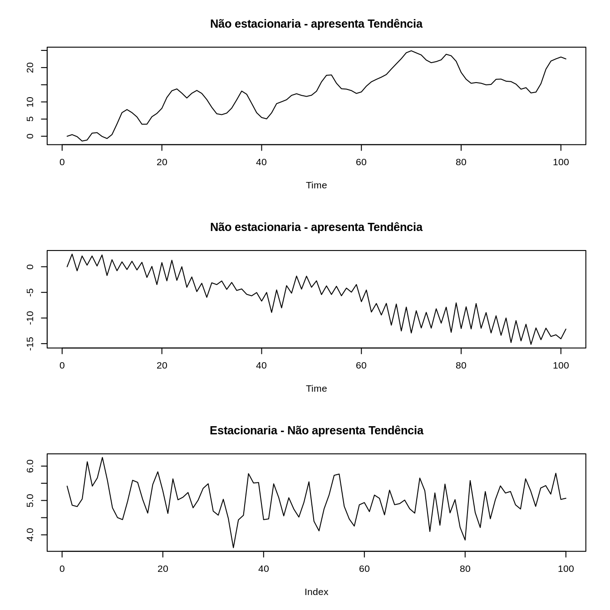
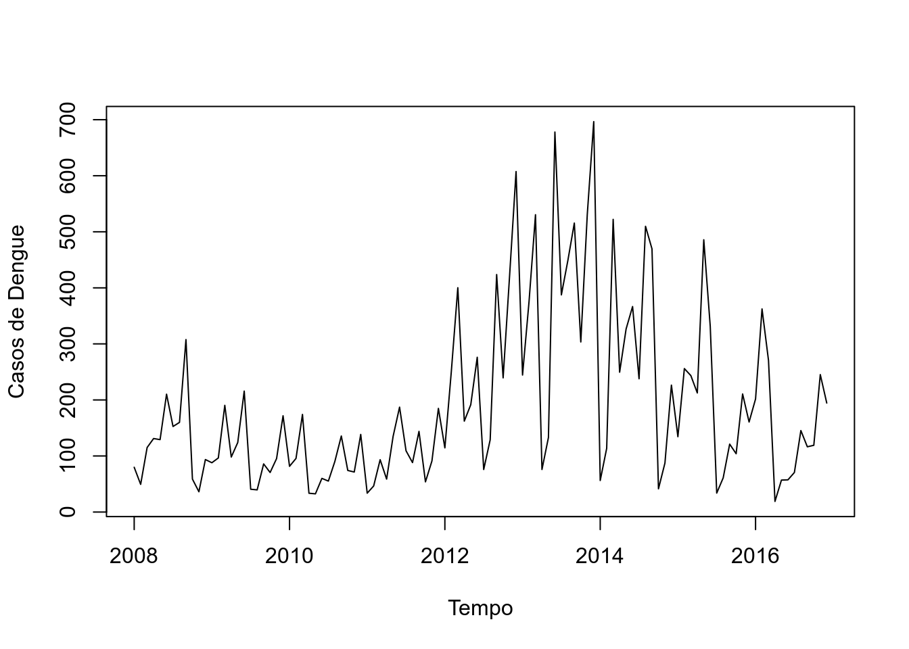
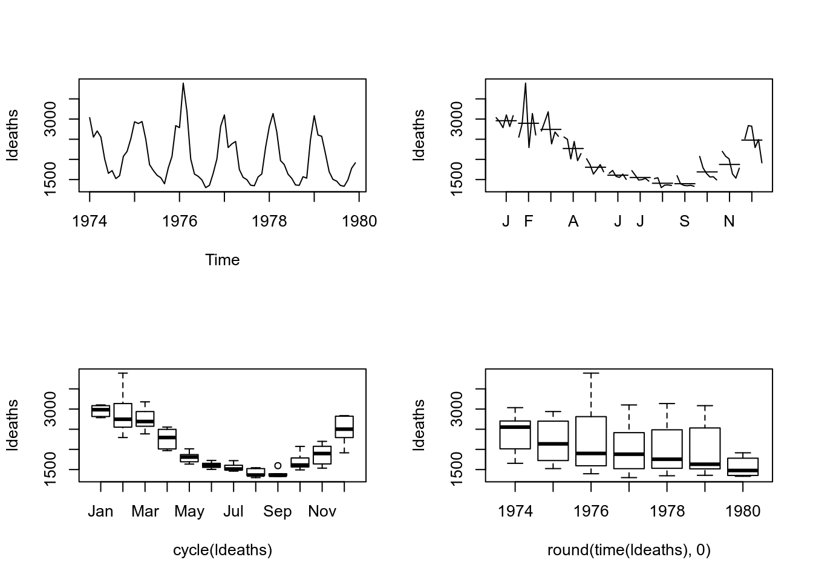
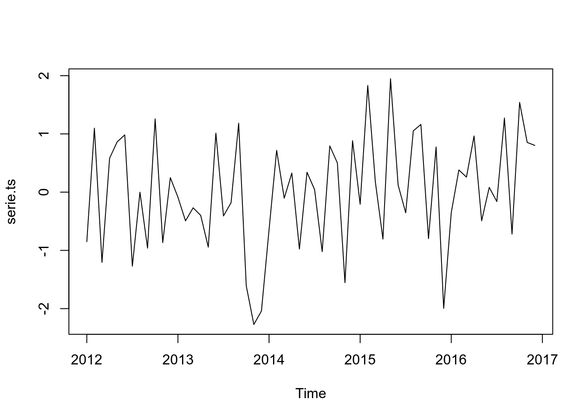
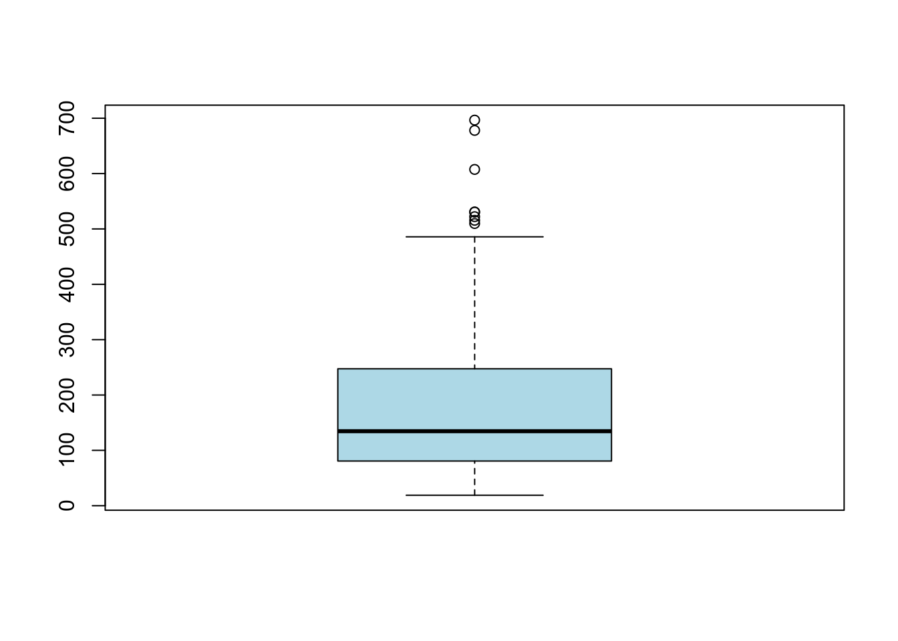
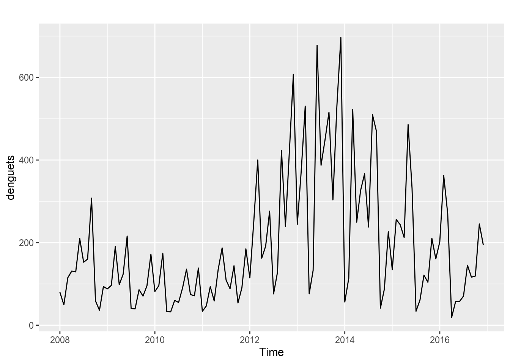
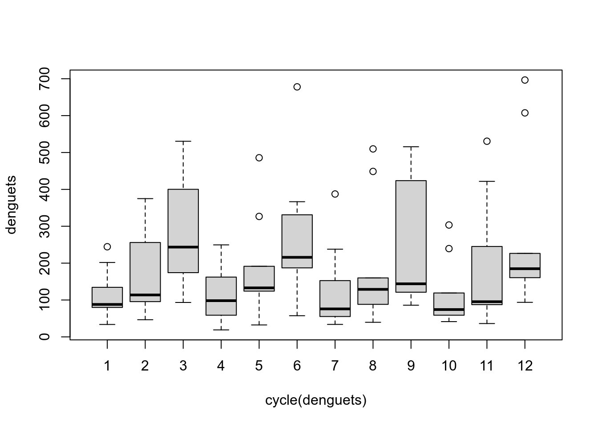

3 Análise Exploratória de uma Séries Temporal
3.1 Análise Exploratória
3.1.1 A função ts é a mais utilizada no pacote R.
data: um vetor ou matriz com dados para a série
start: tempo da primeira observação
end: tempo da última observação
frequency: quantidade de observações por unidade de tempo, podendo representar: Anual = 1, Trimestral = 4, Mensal = 12 e Semanal = 52
3.1.2 Criando uma Série Temporal
library(forecast)
library(ggplot2)
library(urca)
library(lmtest)
library(seasonal)
library(seasonalview)
# Uma serie temporal normalmente distribuida
myts = rnorm(60)
myts = ts(myts,start = c(2012,1), end=c(2016,12), frequency=12)
plot(myts)
3.1.3 Importando uma tabela em formato de Série Temporal
# Para escolher o diretório
# tempts = read.csv(file.choose(), sep=",",header = F)
tempts = read.csv("~/Documentos/cursos_ecologicos_2019/dados/importar.csv", sep=",",header = F)
tempts = ts(tempts[2],start = 1884, end=1939, frequency=1)
class(tempts)[1] “ts”
plot(tempts)
3.1.4 Utilizando um banco de dados real em uma análise de Série Temporal
- Incidência de dengue nas Filipinas, 2008 - 2016
setwd("~/Documentos/cursos_ecologicos_2019/dados")
dengue_original=read.csv("denguecases.csv")
library(DT)
# datatable(dengue_original, filter="top", options = list(pageLength = 5, scrollX=T))
# Como é possível observar, a incidência por dengue além de estar por mês e ano, caracterizando uma série temporal, ela está desagregada por regiões também. Se quisermos fazer uma análise com o país como um todo, precisamos agregar os dados das regiões por mês e ano.
denguecases=aggregate(Dengue_Cases~Month+Year,dengue_original,sum)Colocando em formato de Série temporal utilizando a biblioteca ts do R.
#Convertendo os dados para o formato de Séries Temporais
#A frequency=12 foi especificado pois queremos mostrar dos dados mensais
denguecasests=ts(denguecases$Dengue_Cases,start=c(2008,1),end=c(2016,12),frequency=12)
plot(denguecasests, ylab="Casos de Dengue", xlab="Tempo")
Fazendo uma análise descritiva da série temporal.
max(denguecasests)[1] 696.5617
min(denguecasests)[1] 18.94775
mean(denguecasests)[1] 192.0458
median(denguecasests)[1] 134.6233
summary(denguecasests)Min. 1st Qu. Median Mean 3rd Qu. Max. 18.95 81.18 134.62 192.05 246.27 696.56
length(denguecasests)[1] 108
start(denguecasests)[1] 2008 1
end(denguecasests)[1] 2016 12
frequency(denguecasests)[1] 12
hist(denguecasests)
boxplot(denguecasests)
Mudando a janela de tempo da série temporal. Observando apenas os dados de Jan 2010 até Dez de 2012.

Uma outra forma de mostrar a śerie temporal na íntegra.
autoplot(denguecasests)
3.2 Decompondo a Série Temporal
Existem várias técnicas de decomposição de séries temporais. São as principais delas:
Clássica: Geralmente utilizada quando a frequencia da ST é mensal ou trimestral;
X-13ARIMA-SEATS: Similar a clássica, porém com algumas melhorias;
STL (Seasonal and Trend decomposition using Loess): É mais robusta, é mais sensível a vários tipos de sazonalidade e lida melhor com os outliers.
Algumas Referências:
Seasonal Adjustment by X-13ARIMA-SEATS in R
STL: A seasonal-trend decomposition procedure based on loess
Decomposição Clássica
library(ggfortify)
# Decomposição da Série Temporal
autoplot(decompose(denguecasests))
Em algumas ST não é fácil avaliar suas componentes de maneira visual, ou seja, de maneira gráfica. Para podemos avaliar melhor precisamos utilizar alguns testes estatísticos que possíbilitem tal avaliação.
Decomposição X-13ARIMA-SEATS
# Decomposição da Série Temporal
autoplot(seas(denguecasests))
Decomposição STL
autoplot(mstl(denguecasests))
3.2.1 Avaliando a Estacionariedade da ST
Segundo o teste de Dickey-Fuller:
\(H_{0}\): A ST não é Estacionária
\(H_{1}\): A ST é Estacionária
Alguns exemplos:

Fazendo o teste em nossa ST:
library(tseries)
adf.test(denguecases$Dengue_Cases)Augmented Dickey-Fuller Testdata: denguecases$Dengue_Cases Dickey-Fuller = -2.0782, Lag order = 4, p-value = 0.5442 alternative hypothesis: stationary
Como p-valor = 0,5442, não rejeitamos a hipótese nula, ou seja, não há indícios da ST ser estacionária.
3.2.2 Avaliando a tendência em uma ST
Cosntruindo uma reta baseado no modelo de regressão linear smples para verificar tendência da incidência da dengue.
plot(denguecasests, main = "Incidência de Dengue 20080 and 2016")
abline(reg=lm(denguecasests ~ time(denguecasests)), col = "red")## plotting the trend line of linear regression
Cosntruindo uma curva suavizada baseada na função lowess para verificar tendência da incidência da dengue.
plot(denguecasests, ylab="Casos de Dengue", xlab="Tempo")
library(Kendall)
lines(lowess(time(denguecasests),denguecasests),lwd=3, col=2)
Uma outra forma de mostrar a tendência da ST, fazendo a média anual. Observe que a curva se parece um pouco com a curva do loess porém menos suave.
plot(aggregate(denguecasests, FUN=mean))
3.2.3 Avaliando a Sazonalidade da ST
De maneira visual podemos utilizar algumas técnicas gráficas, tais como:
Boxplot
boxplot(denguecasests ~ cycle(denguecasests)) 
Monthplot
# monthplot(denguecasests) ou
ggsubseriesplot(denguecasests) 
Seasonplot
ggseasonplot(denguecasests) 
ggseasonplot(denguecasests, polar = T)
Segundo o teste de Kruskall-Wallis:
\(H_{0}\): Não existe diferença entre os períodos, ou seja, a série não apresenta sazonalidade
\(H_{1}\): Existe diferença em pelo menos um período em relação aos demais, ou seja, há indícios da ST apresentar sazonalidade
kruskal.test(denguecasests ~ cycle(denguecasests)) Kruskal-Wallis rank sum testdata: denguecasests by cycle(denguecasests) Kruskal-Wallis chi-squared = 20.012, df = 11, p-value = 0.04517
Neste caso, podemos dizer que existe indícios da da série apresentar períodos que são maiores ou menores que outros.
3.3 Transformação
par(mfrow=c(2,2))
#serie original
plot(denguecasests, ylab="Casos", main="Original")
#lambda = 0, logaritmica
t1 = BoxCox(denguecasests,lambda =0 )
plot(t1, ylab="Casos", main="Lambda = 0, Logarítmica")
#gera labda automático
lbd = BoxCox.lambda(denguecasests)
# print(lbd)
t3 = BoxCox(denguecasests,lambda =lbd )
plot(t3, ylab="Casos", main="Labda Automático")
#diferenciacao
t4 = diff(denguecasests)
plot(t4, ylab="Casos", main="Diferenciação")
3.4 Médias Móveis
par(mfrow=c(2,2))
plot(denguecasests, main="ST original")
#Função do pacote forecast que é utilizado para suavização e limpeza de outliers
dengue3 = tsclean(denguecasests)
plot(dengue3, main="Suavização e Limpeza")
# Média móvel de ordem = 5
dengue1 = ma(denguecasests, order = 5 )
plot(dengue1, main="MA ordem 5")
# Média móvel de ordem = 12
dengue2 = ma(denguecasests,order=12)
plot(dengue2, main="MA ordem 12")
plot(denguecasests, lwd=1.5)
lines(dengue1, lwd=1.5, col="red")
lines(dengue2, lwd=1.5, col="blue")
lines(dengue3, lwd=1.5, col="green")
#legenda
legend("topright",legend=c("Original","MA 5","MA 12","tsclean"), col = c("black","red","blue","green"), lty=1:2, cex=1)
3.5 Análise dos Resíduos
prev = auto.arima(denguecasests)
head(prev$residuals) Jan Feb Mar Apr May2008 0.1311332 20.8814031 -43.3428168 -68.3229542 -23.0091775 Jun 2008 48.7772048
#analisando os residuais
autoplot(prev$residuals)
hist(prev$residuals)var(prev$residuals,na.rm = T)[1] 15896.91
mean(as.vector(prev$residuals),na.rm = T)[1] 0.5186493
Segundo o teste de autocorrelação Ljung-Box, temos:
\(H_{0}\): Os resíduos são i.i.d.
\(H_{1}\): Os resíduos não são i.i.d.
Segundo o teste de normalidade Shapiro-Wilk, temos:
\(H_{0}\): Os resíduos apresentam normalidade na distribuição
\(H_{1}\): Os resíduos não apresentam normalidade na distribuição
#acf
acf(prev$residuals, na.action = na.pass)
#funcao especial para checar residuais
checkresiduals(prev)Ljung-Box test
data: Residuals from ARIMA(0,1,1)(0,0,1)[12] Q* = 26.006, df = 20, p-value = 0.1656
Model df: 2. Total lags used: 22
#teste de normalidade
shapiro.test(prev$residuals)Shapiro-Wilk normality testdata: prev$residuals W = 0.96905, p-value = 0.01275
Como o p-valor = 0.1656 para o tete de Ljung-Box, podemos dizer que não existe evidências de que exista autocorrelação entre as incidências de dengue no período de estudo.
Também podemos verificar que o pressuposto de noralidade não pode sr aceito, pois *p-valor = 0.01275 do teste de shapiro-wilk.